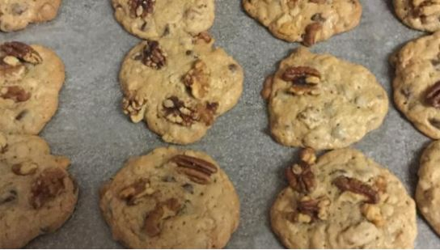

Family Recipes
Old Fashioned Southern Teacakes
Recipe Ingredients:
2-1/2 - Cup Sifted Cup All Purpose Flour
1/4 - Teaspoon of Salt
2 - Teaspoons of Baking Powder
1/2 - Cup of Butter
2 - Eggs (beaten)
1/2 - Teaspoon Vanilla
1 - Tablespoon of Milk
Directions:
Sift flour, salt, baking powder together.
Cream butter, sugar, eggs together.
Add vanilla, milk and dry ingredients. Blend well.
Pour dough on lightly floured board, sprinkle flour over dough and roll to 1/2 inch thick.
Cut with cookie cutter. Place on cookie sheet.
Bake at 350 degrees to 375 degrees for 12 to 15 minutes.
It's easier and much faster to drop the chicken into lard or vegetable shortening and forget about it until the meat is done. This may be true, but you sacrifice taste for convenience.
The fact that you're looking for a southern fried chicken recipe tells me that you're not looking for short cuts. Try this recipe if you want to sacrifice convenience for good eating.
Fried Chicken Recipe
Recipe Ingredients:
2-1/2 To 3 – Pounds of Chicken, Ready To Cook, Cut Up
1/2 – Cup Vegetable Oil
1/2 – Cup All Purpose Flour
2 – Teaspoons Butter Or Margarine
2 – Tablespoons of Seasoning salt
2 – Tablespoons Garlic
2 – Tablespoons Unsalted Meat Tenderizer
1 – Cayenne Pepper
2 – Tablespoon Onion Powder
Cookware and Utensils:
1 – Large Cast Iron Skillet
Directions:
As always the key to great cooking is preparation and quality ingredients.
Clean chicken and pat dry with paper towels. It's best to season your chicken the night before you plan to cook. Form your seasoning mixture by combining seasoning salt, garlic, meat tenderizer, cayenne pepper and onion powder. Generously sprinkle your entire chicken. Ensure the seasoning is applied to all sides. Place seasoned chicken in refrigerator overnight.
Take your chicken out of the refrigerator about 5-10 minutes before you start cooking. After your 5-10 minute wait, coat each piece of chicken with flour.
Over medium-low heat, melt butter and heat vegetable oil in a skillet large enough to hold all of the chicken. Fry chicken over medium low heat until browned on one side. Turn chicken over and brown the other side evenly. Once the grease cooks off and gets absorbed by the chicken add a couple tablespoons of water (this makes the chicken moist). Reduce heat, cover and simmer for 30 minutes.
******************************************
A homemade chicken and dumplings recipe that uses simple ingredients such as onion, carrots, corn, green beans and biscuit dough.
This slow cooker recipe results in about 8 servings
Chicken and Dumplings Recipe
Recipe Ingredients:
4 skinless, boneless chicken breast
2 tablespoons butter
2 cans (10 ounce) condensed cream of chicken soup
1 medium onion, finely diced
1 cup carrots, diced
1 can corn, drained
1 cup fresh green beans, halved
2 packages (10 ounce) refrigerated biscuit dough, in sections
Directions:
Place all ingredients except for the biscuit dough in a slow
cooker.
Fill slow cooker with enough water to cover ingredients. Cover with lid and cook on high for 5 to 6 hours.
Thirty (30) minutes before serving, place the sectioned biscuit dough pieces into the slow cooker.
Cook until the dough is done and then serve.
******************************************
Cathead Biscuits
Reciepe Ingredients
Servings: 8 Units: US/Metric
2 1/4 cups flour
1/3 teaspoon baking soda
1 teaspoon salt
2 teaspoons bakin powder
5 tablespoons shortening (lard, butter or crisco)
1 cup buttermilk
1/8 cup melted butter, for tops of biscuits (optional)
Directions:
1. Mix dry ingredients and sift into mixing bowl, then cut in lard or crisco until the mixture resembles a coarse meal.
2. Stir inbuttermilk until it is incorporated with the flour mixture. The dough will be kind of wet and very sticky.
3. Flour your hands and turn the dough out onto a lightly floured surface. Roll the dough in the flour just enough to make it handleable - you don't want it to stick to your hands too much, but don't work in too much extra flour either or the biscuits will be heavy and taste of raw flour.
4. For each biscuit, pinch off a piece of dough about the size of a large egg or a small lemon and pat out in the ungreased pan with your hands. You don't want it to be really flat, just pat it down a bit so it's relatively discuit-shaped and about 1 inch high.
5. Bake at 475 degrees for 10 to 12 minutes until the tips are golden brown. Keep your eye on them while ther're in the oven so they don't burn.
6. Brush tops of biscuits with melted butter, if desired.
*****************************************

Doubletree Hotel's Cookies
Recipe Ingredients:
3 - Cups Sifted Cup All Purpose Flour
1 - Teaspoon of Salt
3/4 - Teaspoon of Baking Soda
1 1/2 - Cups of Butter
4 - Eggs (beaten)
2 1/2 - Teaspoons Vanilla Extract
1 - Teaspoon of Lemo Juice
1 1/2 - Cups White Sugar
3/4 - Cup of Brown Sugar
3/4 - Cup Rolled Oats
1/4 - Teaspoon Ground Cinnamon
3 - Cups Semisweet Chocolate Chips
1 1/2 - Cups Chopped Walnuts
Directions:
Cream butter in large bowl. Add both sugars and beat on medium for 2 minutes. Add eggs one at a time, beating well after each addition. Add lemon juice and vanilla; mix well.
In a sepeate bowl, stir together dry ingredients. Add to cream mixture and stir well to blend. Add chips and nuts; stir to combine.
Drop by 1/4 cup or 2 ounce scoop on parchment lined baking pans, 2 to 3 inches apart. Bake at 350 degrees F (175 degrees C) for 13 to 15 minutes until lighly browned around the edges. Cool, remove from paper and cool completely on wire rack.